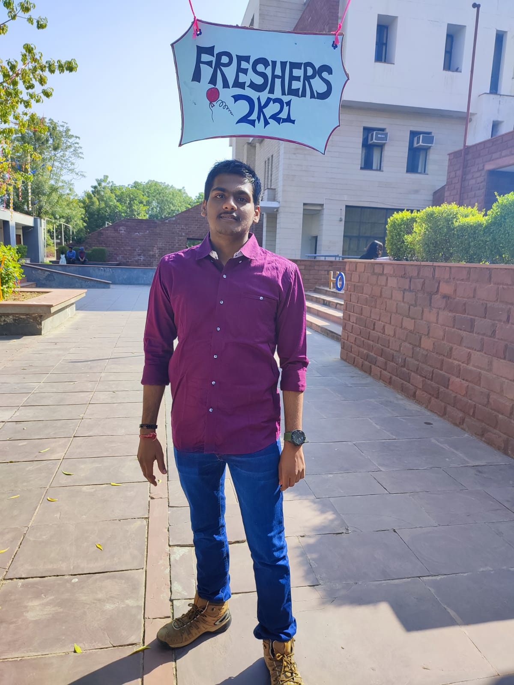

Shashank Singh Shekhawat
Currently persuing B-Tech from PIET.
Language Known
English
Hindi
Contact Me
Objective:
To obtain a challenging position to initiate a career that will allow me to apply my skills
and to accumulate knowledge.
Professional Snapshot:
B-Tech
from
P.I.E.T
, Jaipur {Approved by
R.T.U
}
Academics:
Graduation(2025)
12th (2021) from
K.V
Uttarlai
,Barmer.
10th (2019) from St Paul School, Barmer.
Specialization in B-Tech:
Artificial Intelligence
Core-Cometence / Summary of Skills:
Good Communication Skills and Leadship qualities.
Self Motivated person.
Good with analytical and problem solving techniques.
Capable of handling stressful environment.
Skills:
Web-Development
☆☆☆★★
Python
☆☆☆☆★
C and C++
☆☆☆☆☆
Java
☆☆☆☆☆
C#
☆☆☆☆☆
Courses:
With my B-Tech, I have also completed many courses such as:
.
.
.
Workshop and Seminars:
.
.
.
Special Achievements and Honous:
.
.
.